En moins d’un an, des questions aux réalisations
J’ai découvert l’IA comme un outil de conversation. En quelques mois, elle est devenue une aide concrète pour apprendre Linux, résoudre des besoins quotidiens, construire des outils personnels et développer un univers créatif. L’enjeu n’est pas de remplacer les décisions humaines, mais de rendre les projets réalisables par petites étapes contrôlées.
« L’IA ne remplace pas mes idées ni mes décisions : elle me donne les moyens de les concrétiser. »
Comprendre les systèmes, diagnostiquer et progresser.
Outils, applications et organisation technique.
Roman, BD, musique et univers de science-fiction.
Manuel, RETEX et méthodes de reprise.
Lire le témoignage complet · PDF du témoignage · English story
Création assistée par IA, sous contrôle d’auteur
Notre démarche part de la création réelle : cohérence graphique, décisions humaines, corrections locales et documents persistants. L'objectif n'est pas d'obtenir une image isolée convaincante, mais une œuvre suivie au fil de séances distinctes.
La galerie ci-dessous présente une édition antérieure validée comme référence graphique. L'adaptation BD est en cours de reconstruction. L'extrait ne représente pas la pagination définitive du nouveau chantier.
Une méthode en cinq temps
Intention, lecture et références canoniques.
Anatomie, espace, personnages et récit.
Retouches ciblées plutôt que reconstruction totale.
Approbation humaine explicite.
Décisions, erreurs, leçons et point de reprise.
La Griffe Noire — aperçu autorisé
Couverture et planches 01 à 11 (dont 05A et 05B), 13 pages physiques. Lire le PDF extrait.
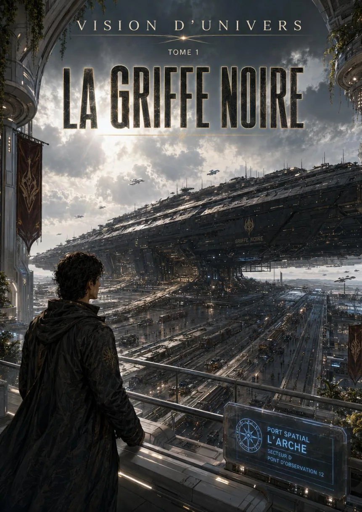
Couverture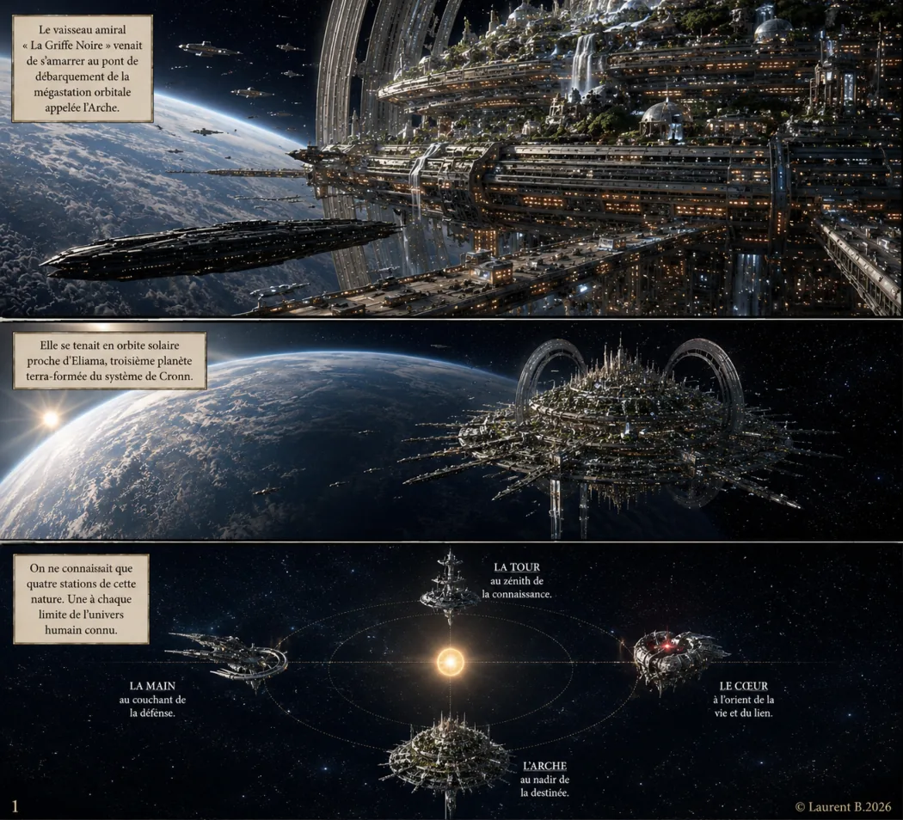
Planche 01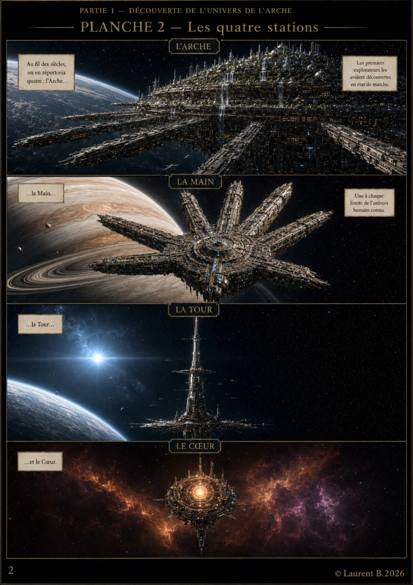
Planche 02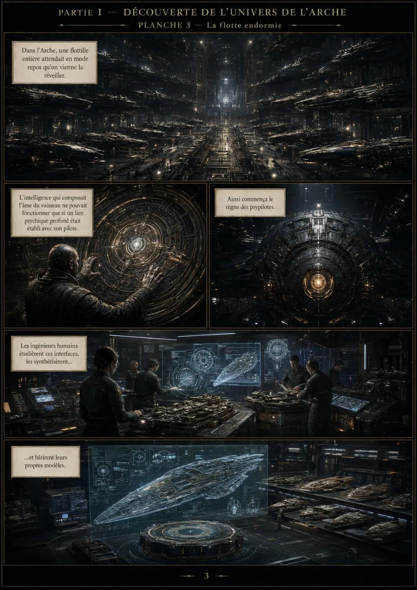
Planche 03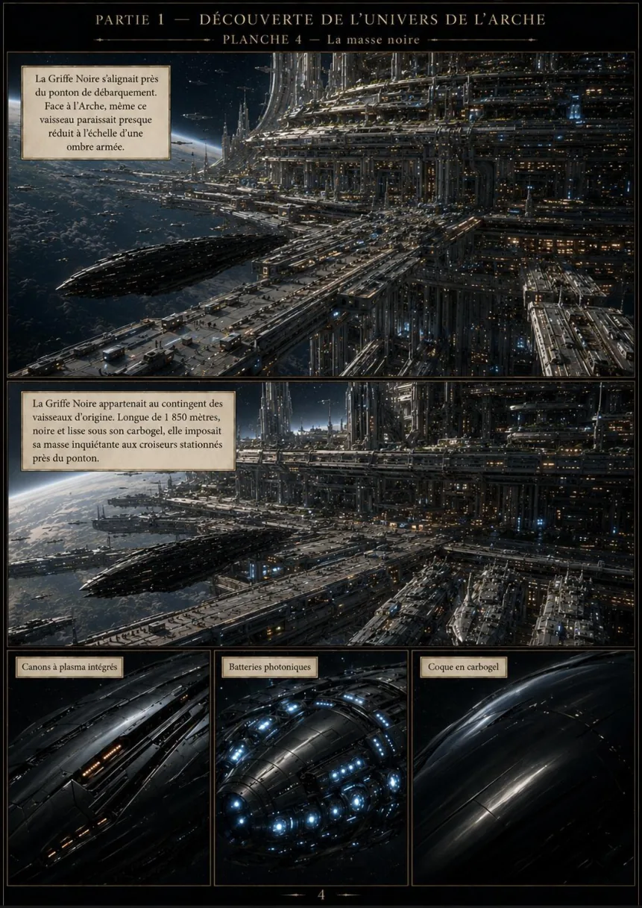
Planche 04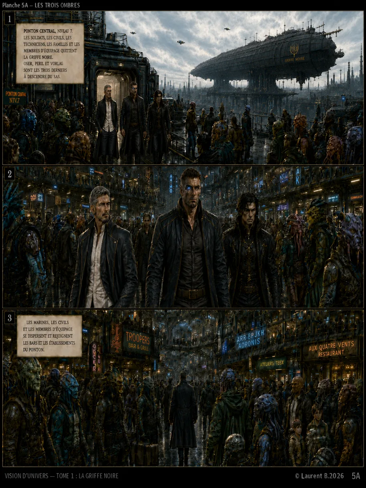
Planche 05A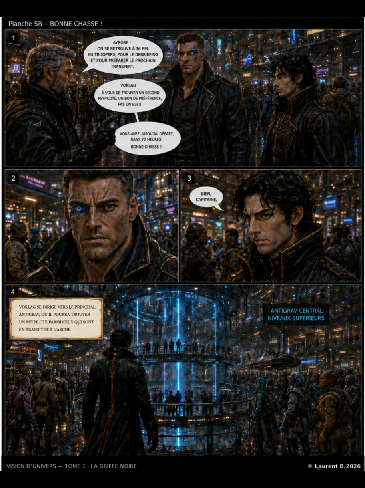
Planche 05B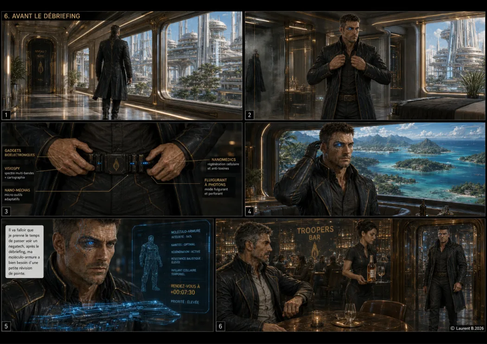
Planche 06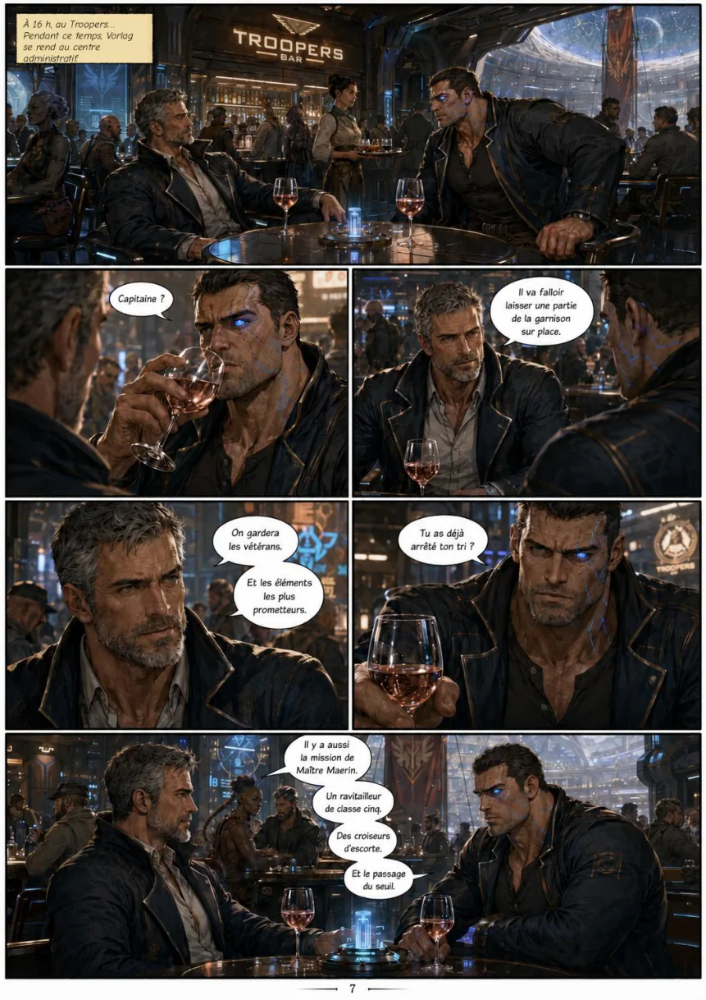
Planche 07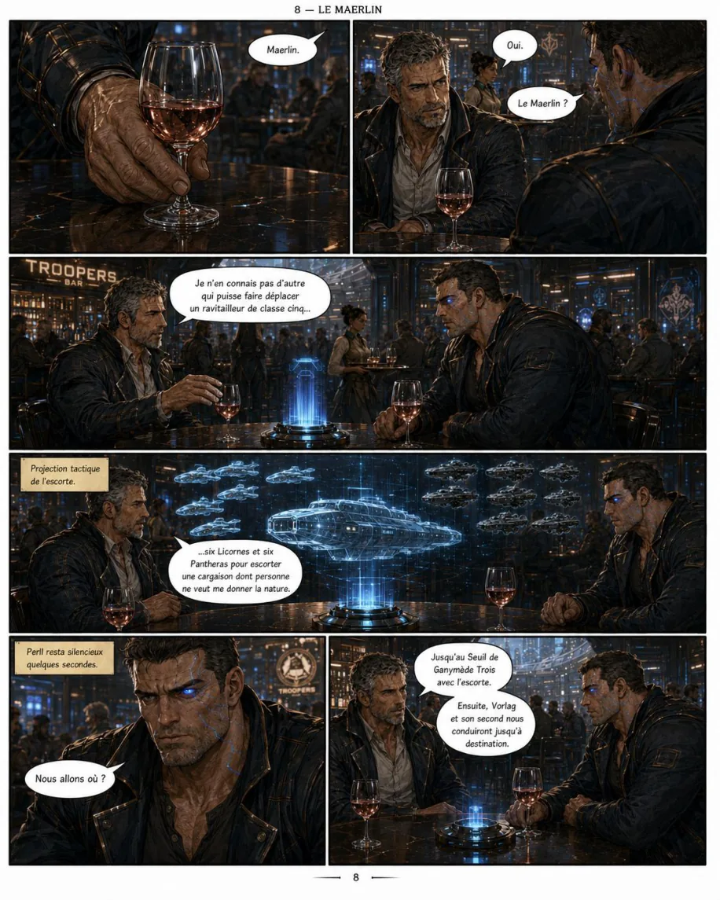
Planche 08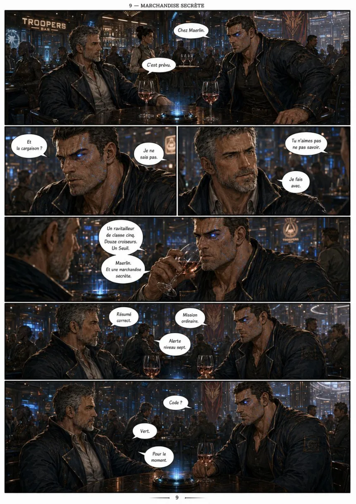
Planche 09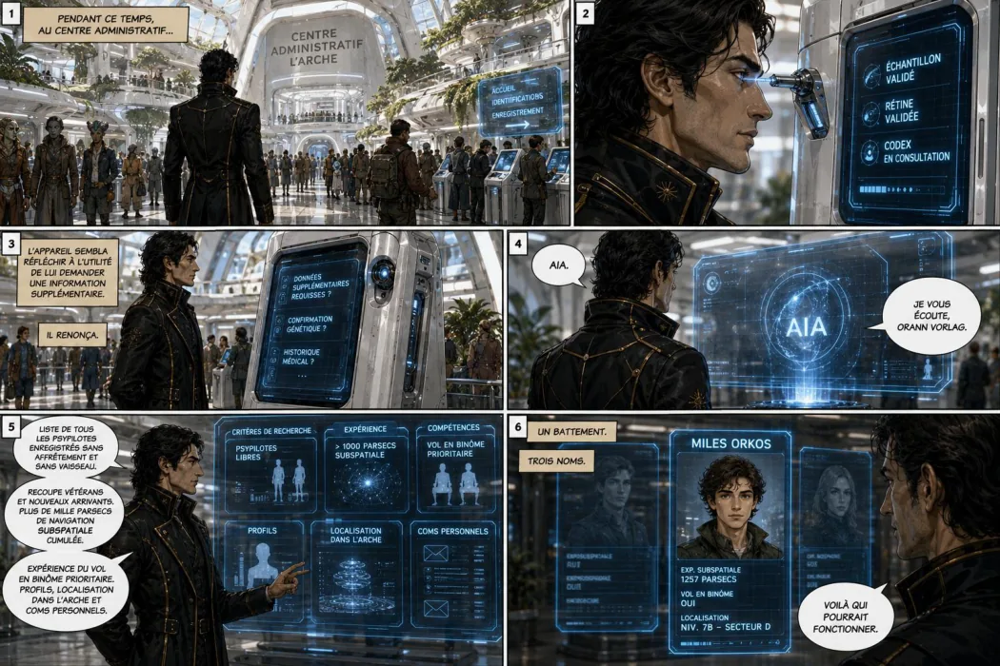
Planche 10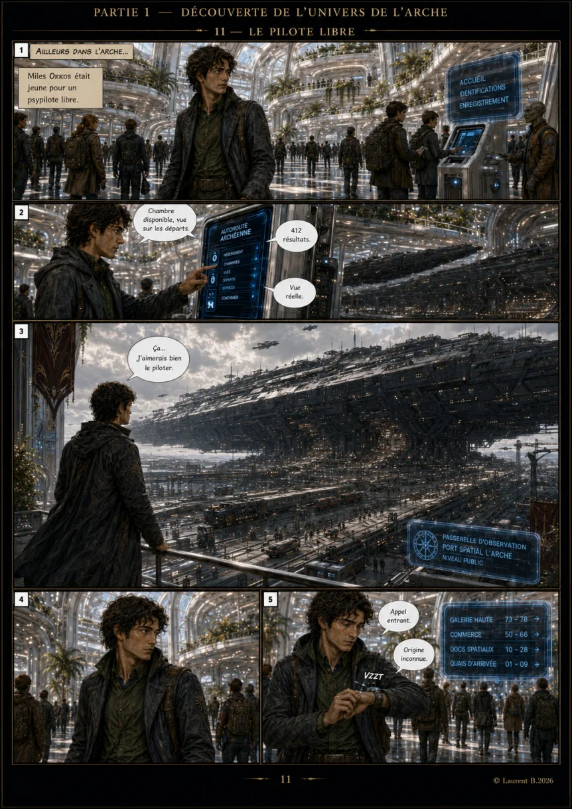
Planche 11Le Grand Manuel Linux — apprendre par les faits
Un besoin quotidien devient une enquête, puis une procédure vérifiée et un retour d’expérience. Cette édition publique anonymisée montre la méthode sans révéler les machines, le réseau, les accès ou les fichiers privés.
Continuité d'une conversation à l'autre
Le RETEX n'est ni une mémoire magique ni un simple résumé : c'est un transfert structuré de décisions, états, erreurs, sources autorisées et actions suivantes. Une nouvelle session lit les documents et vérifie l'état du projet avant de travailler.
Lire la méthode et les quatre exemples anonymisés · Dossier de présentation FR
Droits : © Laurent B. 2026. Illustrations et récit : tous droits réservés. Les RETEX publiés sont des adaptations pédagogiques anonymisées, non des journaux bruts.